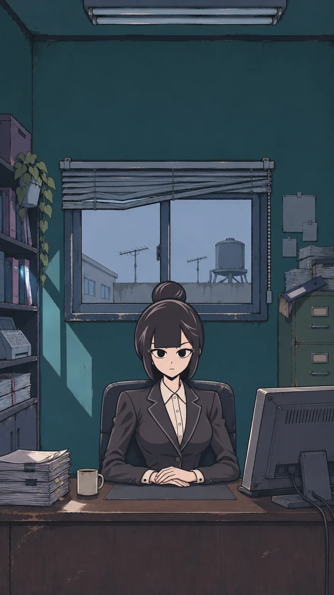
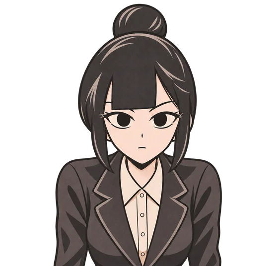
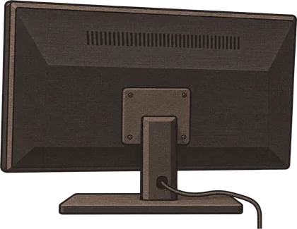

껍데기 여는 중
세희
저장됨
머리 없음 · 깡통
⚙
‹
›
오늘
열린 것만
새 버전이 왔어요. 하던 일이 끝나면 저절로 바뀌어요(쓰던 내용은 그대로).
지금 적용
지난 판이에요. 여기서 고쳐도 오늘 판은 그대로예요.
오늘 판으로
넘기기

강세희 ▾
대화 보기 ›
강세희

판
달력
보드
사람
📅 달력
옆면이나 머리를 오른쪽으로 끌면 닫혀요
✕
📌 화이트보드
옆면이나 머리를 오른쪽으로 끌면 닫혀요
✕
보드
보고서함
갤러리
목록
+ 메모
강세희
대화 보기 ›
↑
👥 인간관계 판
옆면이나 머리를 오른쪽으로 끌면 닫혀요
✕
수사판
+ 사람
꾸밈
크게 보기
📎
↑
🗒️
판
☕
사무실
🛠
로그
개발자 로그
멈춤
복사
지우기
✕
‹
가-
가+
복사
인쇄
떼기
되돌리기